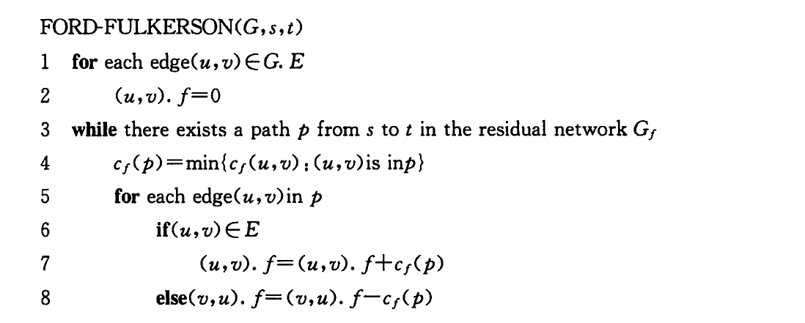

public: true class: center, middle # 卫宫家今天的饭 <s>饱受OJ折磨的我决定以德报怨给大家出道水题</s> --- # 题源 POJ 3281 Dining [openjudge传送门](http://bailian.openjudge.cn/practice/3479/) .right[] --- # 题目描述 基本只是把原题搬到了月球上 .red[出题人的锅：题面1.0表述不精确，现在改掉了] + N位客人，F种食物，D种饮料 + 每位客人有多种喜欢的事物和饮料 + 每位客人只吃一种食物、只喝一种饮料 + 每种食物，每种饮料只能被一位客人吃/喝 ********* -- 可以看成两个二分图最大匹配问题 人-食物-饮料 一一一对应 --- # 构建流网络 + 先尝试：食物-客人-饮料 + 会出现一位客人对应多份食物或饮料的情况 + 客人结点需要加上结点容量 + 将每个客人结点拆分为两个 ******** -- + 源点s-食物-客人1-客人2-饮料-汇点 + 存图：数据规模小，用邻接矩阵较为方便，用邻接链表可能会翻车 --- # 最大流算法 + 数据规模[1,100] + EK完全OK + 没有刻意生成卡任何算法的数据，也许可以尝试暴力 + 板子写起来有丶难度 + 代码虽然我贴了，但是务必自己写一遍！ -- + 也可以掏出你的Dinic板子 .center[] --- # EK板子  + <s>容量c[N][N]，流量f[N][N]</s> + 只需要一个记录当前残存容量的数组map[N][N] + 百度随便搜一下就能找到 --- ## 板子代码 ```C++ int edmonds_karp() { int ans = 0; int minc; while((minc = bfs()) != -1) { //bfs找到一条增广路径 ans += minc; //加上这条增广路径的流量 int tt = t,pt; while(tt != s) { pt = pre[tt]; map[pt][tt] -= minc; map[tt][pt] += minc; tt = pt; } //修改这条增广路径上的边的残存容量 } return ans; } ``` --- ## bfs寻找增广路径 ```C++ int bfs(){ memset(pre, -1, sizeof(pre)); int minc = 1e9; queue <int> q; q.push(s); while(!q.empty()){ int u = q.front(); q.pop(); if(u == t) break; for(int i = 1; i <= t; ++i) { if(pre[i] == -1 && map[u][i]) { minc = min(minc, map[u][i]); //更新当前路径的最小残存容量 q.push(i); pre[i] = u; //pre数组用于记录bfs找到的增广路径 } } } if(pre[t] == -1) return -1; else return minc; } ``` --- ## 建图 代码不贴惹，自己写吧:) -- ### Tips: 为了将各种不同类型的所有点都囊括在一个数组里的同时，增强代码的可读性，可以使用宏定义 ```C #define FOOD(x) **我** #define GUEST1(x) **是** #define GUEST2(x) **马** #define DRINK(x) **赛** #define s **克** #define t **!** ``` --- class: center, middle # 鸣谢 + 两位验题人 + jyy和oxf的remark.js模板 + Fancy小姐姐的技术援助